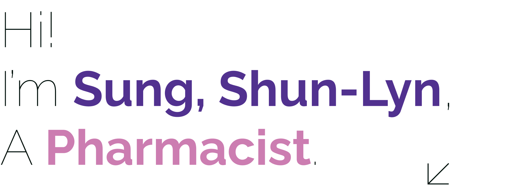

-

Oscar Wilde, an Irish writer, had said: “The
smallest act of kindness is worth more than
the grandest intention.” This sentence fits
Sung, Shun lyn very well.
Sung, Shun lyn is an expert in Pharmacy.
She studied at the Department of Pharmacy
in National Taiwan University during
college. After graduation, she worked in
Yadong Memorial Hospital as an occupational
pharmacist. She had extensive career
experiences such as participating in the
establishment of the most cutting-edge
computerized system for outpatient and
inpatient drug prescriptions at the time,
executing administrative affairs such as
in-hospital prescription and editing, and
serving as acting pharmacy director for
four months.
After she got married and had children,
she switched to the role of a wife and went
abroad to accompany her children to study.
But in the past few years, she has gradually
learned about the situation of women who are
unable to express themselves after marriage.
Therefore, she switched to the field of
pharmaceutical regulations and met the
Women's New Knowledge Foundation. In 1997,
she started a personal studio for
pharmaceutical regulatory services. In 2006,
she established Weigong Trading Co., Ltd. In
2021, she took over as the only Chinese
feminist female bookstore in Asia.
- Chairman.
Sung, Shun lyn participated in many female
non-governmental organizations, started a
different life, and practiced a woman
-friendly workplace. She is an admirable
female scientist!